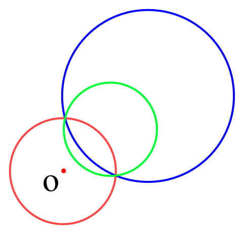
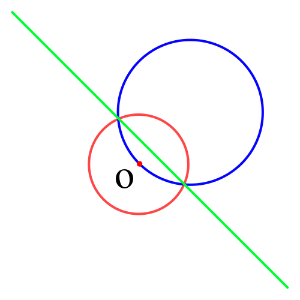

反演变换
引入
反演变换适用于题目中存在多个圆/直线之间的相切关系的情况。利用反演变换的性质，在反演空间求解问题，可以大幅简化计算。
定义
给定反演中心点
- 点
在射线 上
则称点
解释
下图所示即为平面上一点

性质
-
圆
外的点的反演点在圆 内，反之亦然；圆 上的点的反演点为其自身。 -
不过点
的圆 ，其反演图形也是不过点 的圆。 
-
记圆
半径为 ，其反演图形圆 半径为 ，则有： 证明：

根据反演变换定义：
消掉
，解方程即可。 -
记点
坐标为 ，点 坐标为 ，点 坐标为 ，则有： 其中
可在上述求 的过程中计算得到。
-
-
过点
的圆 ，其反演图形是不过点 的直线。 Note
为什么是一条直线呢？因为圆
上无限接近点 的一点，其反演点离点 无限远。 
-
两个图形相切且存在不为点
的切点，则他们的反演图形也相切。
例题
「ICPC 2013 杭州赛区」Problem of Apollonius
题目大意
求过两圆外一点，且与两圆相切的所有的圆。
解法
首先考虑解析几何解法，似乎很难求解。
考虑以需要经过的点为反演中心进行反演（反演半径任意），所求的圆的反演图形是一条直线（应用性质
于是题目经过反演变换后转变为：求两圆的所有公切线。
求出公切线后，反演回原平面即可。
示例代码
#include <algorithm>
#include <cmath>
#include <cstdio>
#include <cstring>
#include <iostream>
#include <vector>
using namespace std;
constexpr double EPS = 1e-8; // 精度系数
const double PI = acos(-1.0); // π
constexpr int N = 4;
// 点的定义
struct Point {
double x, y;
Point(double x = 0, double y = 0) : x(x), y(y) {}
bool operator<(Point A) const { return x == A.x ? y < A.y : x < A.x; }
};
// 向量的定义
using Vector = Point;
// 向量加法
Vector operator+(Vector A, Vector B) { return Vector(A.x + B.x, A.y + B.y); }
// 向量减法
Vector operator-(Vector A, Vector B) { return Vector(A.x - B.x, A.y - B.y); }
// 向量数乘
Vector operator*(Vector A, double p) { return Vector(A.x * p, A.y * p); }
// 向量数除
Vector operator/(Vector A, double p) { return Vector(A.x / p, A.y / p); }
// 与0的关系
int dcmp(double x) {
if (fabs(x) < EPS) return 0;
return x < 0 ? -1 : 1;
}
// 向量点乘
double Dot(Vector A, Vector B) { return A.x * B.x + A.y * B.y; }
// 向量长度
double Length(Vector A) { return sqrt(Dot(A, A)); }
// 向量叉乘
double Cross(Vector A, Vector B) { return A.x * B.y - A.y * B.x; }
// 点在直线上投影
Point GetLineProjection(Point P, Point A, Point B) {
Vector v = B - A;
return A + v * (Dot(v, P - A) / Dot(v, v));
}
// 圆
struct Circle {
Point c;
double r;
Circle() : c(Point(0, 0)), r(0) {}
Circle(Point c, double r = 0) : c(c), r(r) {}
// 输入极角返回点坐标
Point point(double a) { return Point(c.x + cos(a) * r, c.y + sin(a) * r); }
};
// 两圆公切线 返回切线的条数，-1表示无穷多条切线
// a[i] 和 b[i] 分别是第i条切线在圆A和圆B上的切点
int getTangents(Circle A, Circle B, Point* a, Point* b) {
int cnt = 0;
if (A.r < B.r) {
swap(A, B);
swap(a, b);
}
double d2 =
(A.c.x - B.c.x) * (A.c.x - B.c.x) + (A.c.y - B.c.y) * (A.c.y - B.c.y);
double rdiff = A.r - B.r;
double rsum = A.r + B.r;
if (dcmp(d2 - rdiff * rdiff) < 0) return 0; // 内含
double base = atan2(B.c.y - A.c.y, B.c.x - A.c.x);
if (dcmp(d2) == 0 && dcmp(A.r - B.r) == 0) return -1; // 无限多条切线
if (dcmp(d2 - rdiff * rdiff) == 0) { // 内切，一条切线
a[cnt] = A.point(base);
b[cnt] = B.point(base);
++cnt;
return 1;
}
// 有外公切线
double ang = acos(rdiff / sqrt(d2));
a[cnt] = A.point(base + ang);
b[cnt] = B.point(base + ang);
++cnt;
a[cnt] = A.point(base - ang);
b[cnt] = B.point(base - ang);
++cnt;
if (dcmp(d2 - rsum * rsum) == 0) { // 一条内公切线
a[cnt] = A.point(base);
b[cnt] = B.point(PI + base);
++cnt;
} else if (dcmp(d2 - rsum * rsum) > 0) { // 两条内公切线
double ang = acos(rsum / sqrt(d2));
a[cnt] = A.point(base + ang);
b[cnt] = B.point(PI + base + ang);
++cnt;
a[cnt] = A.point(base - ang);
b[cnt] = B.point(PI + base - ang);
++cnt;
}
return cnt;
}
// 点 O 在圆 A 外，求圆 A 的反演圆 B，R 是反演半径
Circle Inversion_C2C(Point O, double R, Circle A) {
double OA = Length(A.c - O);
double RB = 0.5 * ((1 / (OA - A.r)) - (1 / (OA + A.r))) * R * R;
double OB = OA * RB / A.r;
double Bx = O.x + (A.c.x - O.x) * OB / OA;
double By = O.y + (A.c.y - O.y) * OB / OA;
return Circle(Point(Bx, By), RB);
}
// 直线反演为过 O 点的圆 B，R 是反演半径
Circle Inversion_L2C(Point O, double R, Point A, Vector v) {
Point P = GetLineProjection(O, A, A + v);
double d = Length(O - P);
double RB = R * R / (2 * d);
Vector VB = (P - O) / d * RB;
return Circle(O + VB, RB);
}
// 返回 true 如果 A B 两点在直线同侧
bool theSameSideOfLine(Point A, Point B, Point S, Vector v) {
return dcmp(Cross(A - S, v)) * dcmp(Cross(B - S, v)) > 0;
}
int main() {
int T;
scanf("%d", &T);
while (T--) {
Circle A, B;
Point P;
scanf("%lf%lf%lf", &A.c.x, &A.c.y, &A.r);
scanf("%lf%lf%lf", &B.c.x, &B.c.y, &B.r);
scanf("%lf%lf", &P.x, &P.y);
Circle NA = Inversion_C2C(P, 10, A);
Circle NB = Inversion_C2C(P, 10, B);
Point LA[N], LB[N];
Circle ansC[N];
int q = getTangents(NA, NB, LA, LB), ans = 0;
for (int i = 0; i < q; ++i)
if (theSameSideOfLine(NA.c, NB.c, LA[i], LB[i] - LA[i])) {
if (!theSameSideOfLine(P, NA.c, LA[i], LB[i] - LA[i])) continue;
ansC[ans++] = Inversion_L2C(P, 10, LA[i], LB[i] - LA[i]);
}
printf("%d\n", ans);
for (int i = 0; i < ans; ++i) {
printf("%.8f %.8f %.8f\n", ansC[i].c.x, ansC[i].c.y, ansC[i].r);
}
}
return 0;
}
练习
「ICPC 2017 南宁赛区网络赛」Finding the Radius for an Inserted Circle
参考资料与拓展阅读
最后更新: 2024年10月9日
创建日期: 2019年10月4日
创建日期: 2019年10月4日